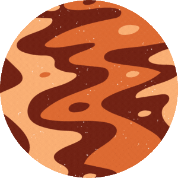
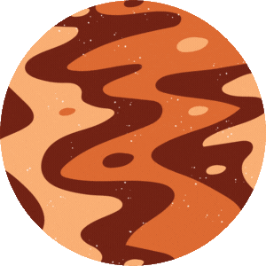

Venus is the 2nd planet from the Sun and is often called Earth's "sister
planet" due to their similar size and composition. However, Venus has a thick atmosphere
composed mainly of carbon dioxide, with clouds of sulfuric acid, making it the hottest planet
in the Solar System. Venus rotates in the opposite direction to most planets in the Solar System,
a phenomenon known as retrograde rotation.
Key Facts
Distance from Sun: ~108.2 million km
Orbital Period: 225 Earth days
Rotation Period: 243 Earth days
Diameter: 12,104 km
Moons: 0 (It's lonely!)
Fun Facts
Venus is the hottest planet in the Solar System, with surface temperatures reaching
up to 471 °C (880 °F).
Venus has a thick atmosphere composed mainly of carbon dioxide, with clouds of
sulfur.
Venus rotates in the opposite direction to most planets in the Solar System, a phenomenon known as
retrograde rotation.
Venus is often called Earth's "sister planet" due to their similar size and composition.
Venus Orbit
Almost all planets in the Solar System rotate counterclockwise on their axes and orbit the
Sun in the same direction. Venus also follows a counterclockwise orbit but rotates clockwise
on its axis. One theory for this unusual rotation suggests that a massive collision early in its history
caused it to tilt and reverse its spin. The only other planet with a clockwise rotation is
Uranus, which is tilted almost completely on its side. Interesting, huh?
Venus Atmosphere Composition
Venus Atmosphere (in Percentage %)
Molecules
Composition Percentage
Carbon Dioxide CO2
96.5%
Nitrogen N2
3.5%
Other compounds (SO2, HCl, HF, Ar, ...)
< 0.1%
Venus Surfaces
Did you know that since Venus is covered in a dense layer of carbon dioxide and sulfur
clouds - so much so that it is reflexive to visible light, making it the brightest object in the sky
after the Sun and the Moon? The actual Venus surface is rocky, mountainous, and orange due to the presence of iron oxide.
Venus With & Without the Atmosphere
From A Planet with Water To the Hottest!
Based on several observations on Venus, scientists noticed some unique characteristics that could
bear the resemblance of life! There is a theory that Venus may have contained shallow ocean water
on its surface hundreds of millions of years ago!


:max_bytes(150000):strip_icc()/1024px-Venus_globe-5a88ae823de423003738f750.jpg) 
